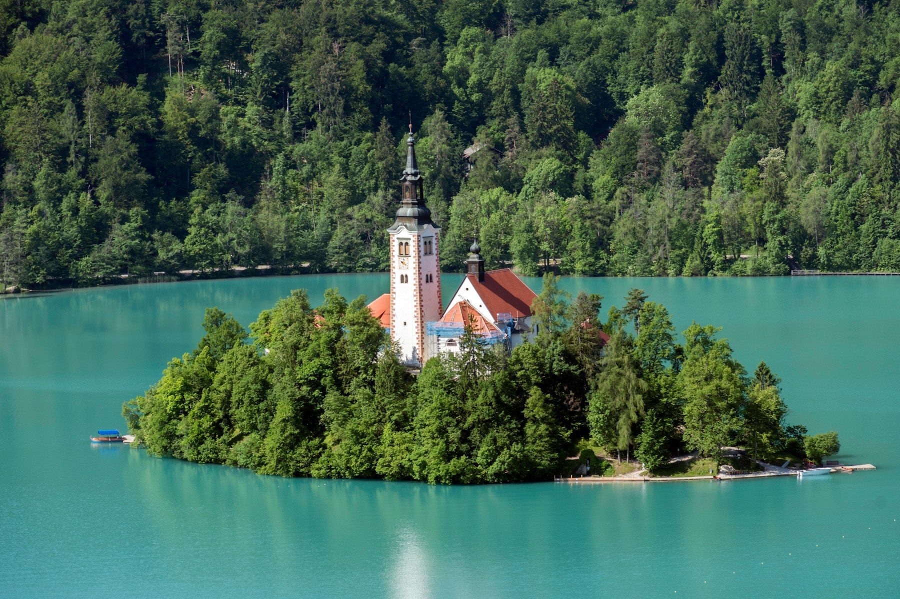
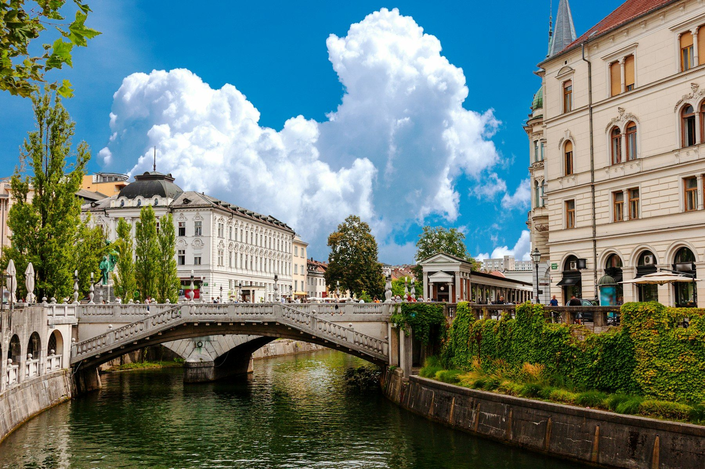
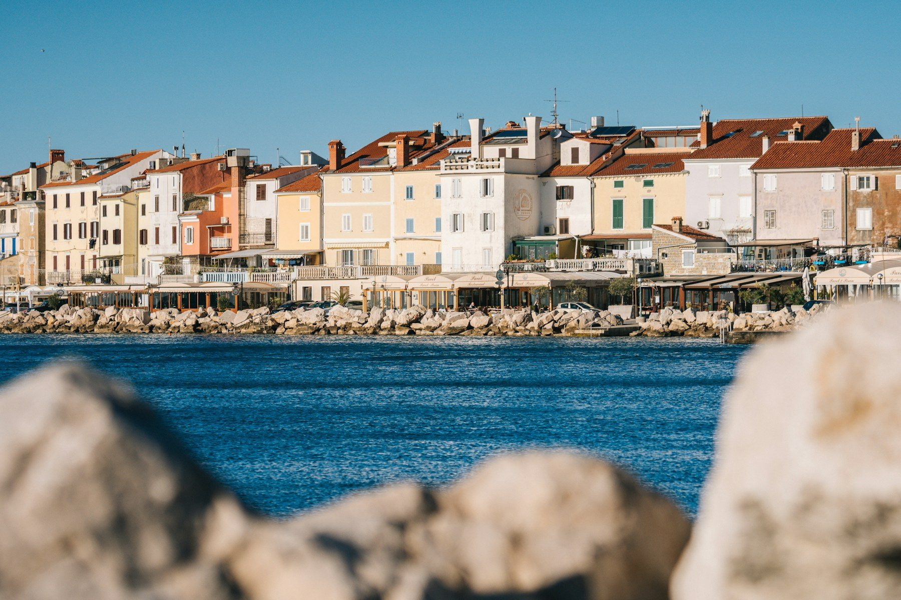
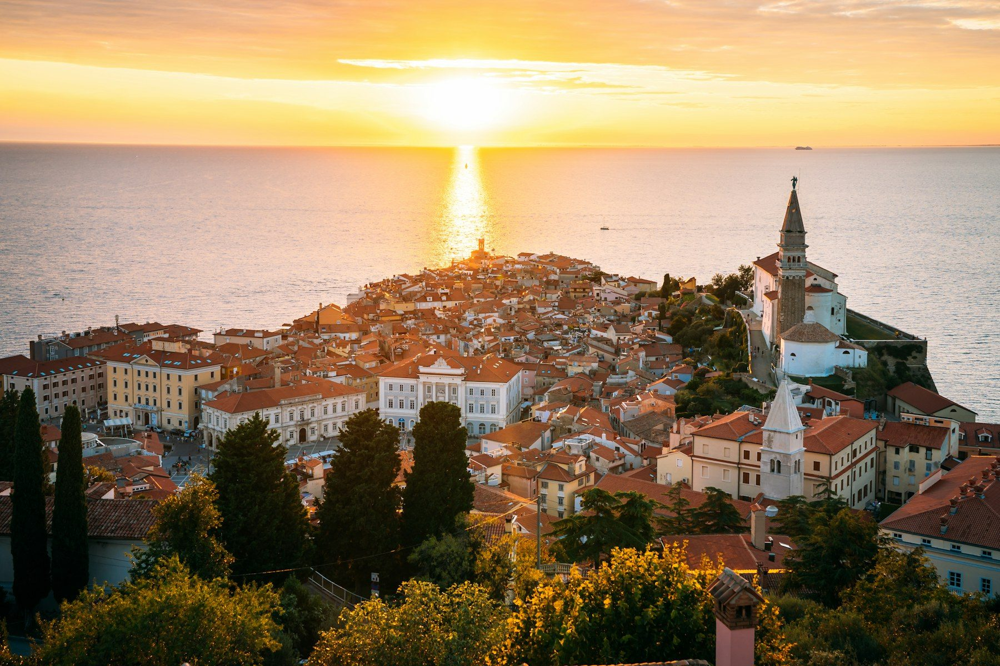

Slovenia
Candidate country · two route plans on the table · built for a car-free week
The country isn't decided yet, and this page exists so the choice is fair. Two decks went round: a 10-day plan (Ljubljana → Bled & Bohinj → the Piran coast) and a 7-day plan that adds Postojna's caves and a night in the Alps. Everything below is drawn from those two plans — a capital, two alpine lakes, a cliff castle, and a 47-kilometre stretch of Adriatic. Four holidays in one, all within bus distance of each other.
Ljubljana
The capital is a small, confident old town wrapped around a green river: the Triple Bridge fanning out from Prešeren Square, the Dragon Bridge wearing its winged guardians (the dragon is the city symbol, and the city is not subtle about it), and a castle hill you climb on foot for free. The Central Market handles breakfast; a gostilna — a plain local inn — handles dinner better than the tourist waterfront would.



Bled & Bohinj
Two lakes, forty minutes apart, with division of labour. Lake Bled does the fairy tale: a traditional pletna boat rows you out to the island church — Slovenia's only natural island, since the deck will ask — Bled Castle perches on its cliff above the water, and the obligatory slice of kremšnita, the vanilla-and-custard cream cake, waits at a lakeside café. The lake loop is about 6 km of easy walking; the Ojstrica viewpoint is short but steep and earns the photo everyone means by "the Bled photo".
Lake Bohinj, reached by bus via Bled, does the quiet version: bigger, colder, mountain-flanked, with the little church of St John at the water and the Vogel cable car running up the mountainside. Swimmers are pointed at designated spots — Mala and Velika Zaka at Bled, Ribčev Laz and Ukanc at Bohinj — and warned that mountain water in May is bracing rather than warm. Vintgar Gorge, a boardwalk bolted to the side of a river canyon, sits between the two and closes the loop.


The caves & the cliff castle
The 7-day plan's detour is an easy pair, roughly fifty minutes from Ljubljana: Postojna Cave, one of Europe's great karst systems, toured partly by an underground train; and Predjama Castle, fifteen minutes on, built into the mouth of a cliff face like a bird deciding on architecture. Book the castle transfer ahead — the deck is firm on that point. On the same karst plateau, the Sečovlje salt pans and the Lipica stud farm (the original Lipizzaners, since the deck will ask) sit near the coast for slow-weather days.
Piran & the coast
Slovenia's coast is 47 kilometres long, which sounds like a typo until you arrive: Piran is a Venetian town on a teardrop peninsula — Tartini Square, salt-bleached lanes, town walls, and a cathedral bell tower with the whole Adriatic behind it. Swimming is off rocky and paved access points (water shoes, per the deck's repeated insistence), with Izola and Portorož nearby for easier beach afternoons. Bring a long seafood lunch and no schedule; the sunset over the water is the closing scene either plan writes itself toward.



Two routes on the table
Both plans are public-transport-only, which Slovenia makes easy: Ljubljana sits about 40 minutes from Bled (buses every 30–40 minutes), 1h 30m from Bohinj, 50 minutes from Postojna, and 2h 30m from Piran — the longest leg by far.
- The 10-day plan — written for a bigger group and shared apartments: Ljubljana nights 1–3, Bled 4–6 (Bohinj by bus so the bags stay put), the Koper/Piran coast 7–9, day 10 home. Budgeted to R28,500 against a R30,000 cap.
- The 7-day plan — late May to early June, one-night hops: Ljubljana (2) → Bled (1) → Bohinj (1) → Postojna/Predjama (1) → Piran (1) → Kranjska Gora (1), with an estimated R29,726.
When to go, per the deck that asked the question directly: swimming is best late June to early September, with the sweet spot at the shoulders — late June or early September balances warm water against crowds and rates. Late May wins for hiking and quiet, and loses on lake temperature.
Eat & drink: štruklji (rolled dumplings), kremšnita, potica, kranjska klobasa with mustard, jota, and idrijski žlikrofi — plus Slovenian honey, which has UNESCO recognition. Currency is the euro.Field note · Balkans 2027
The fine print, before this wins
One practical asymmetry decides a lot: Slovenia is in Schengen, so it needs a visa where Montenegro, Bosnia and Albania mostly don't — details and flight routings are on the Flights & visas page. And the honest comparison with the current plan: our existing Split → Tirana field notes (itinerary, all pages) already cover the southern route end to end. Nothing here retires that plan; this page just earns Slovenia a fair hearing.